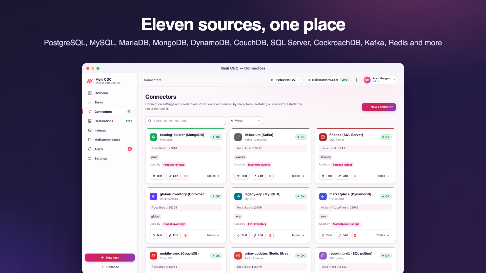

Sources and connectors
meilisearch-cdc reads changes from eleven kinds of sources. A connector stores how to reach one source; tasks pick a connector and add the table.
Supported sources
| Source | Type id | Capture method | Snapshot | TRUNCATE / drop |
|---|---|---|---|---|
| PostgreSQL | postgres | Logical replication, pgoutput | Keyset pages of 5,000 rows | Captured |
| MySQL 8 | mysql | Binary log (as a replica) | Keyset pages of 5,000 rows | Captured |
| MariaDB | mariadb | Binary log (as a replica) | Keyset pages of 5,000 rows | Captured |
| MongoDB | mongodb | Change streams | Collection scan | Drop, rename, dropDatabase |
| DynamoDB | dynamodb | DynamoDB Streams | Parallel scan (4 segments) | No |
| CouchDB / Cloudant | couchdb | _changes feed (longpoll) | _all_docs pages | No |
| SQL Server | sqlserver | Native CDC change tables | Keyset pages of 5,000 rows | No |
| CockroachDB | cockroachdb | Core (sinkless) changefeed | Consistent read AS OF SYSTEM TIME | No |
| Kafka (Debezium) | kafka | Debezium JSON envelopes | Topic replay, folded per key | Debezium op: t |
| Redis Streams | redis | XREAD | Stream replay, folded per key | op truncate entries |
| SQL polling | sqlpoll | Incremental cursor column (PostgreSQL, MySQL, SQLite drivers) | Keyset pages of 1,000 rows | No |
| Webhook | webhook | HTTP push to /api/v1/ingest/{task} | None (push only) | {"op":"truncate"} |
When a source reports a truncate, the task is held unless the task allows it (sync.safety.allowTruncate); with it allowed, every document of the index is deleted. See safety guards.
Connectors
A connector is a saved source connection: its type and the connection fields of that type. Credentials are stored once, encrypted, and never returned by the API (passwords in connection strings and DynamoDB secret keys come back masked as ••••••). Tasks reference a connector with source.connectorId and add only table-level fields.

| Type | Connection fields (connector) | Table-level fields (task) |
|---|---|---|
postgres | dsn | schema, table, slot, publication |
mysql, mariadb | dsn, database | database, table, serverId |
mongodb | dsn, database | database, table (collection) |
dynamodb | region, endpoint, accessKeyId, secretAccessKey | table |
kafka | brokers | groupId, table (topic) |
sqlpoll | driver, dsn | table, cursorColumn, pollInterval |
couchdb | dsn | table (database) |
sqlserver | dsn | schema, table (and slot, the capture instance, through the API) |
cockroachdb | dsn | table (and schema through the API) |
redis | dsn | table (stream key) |
webhook | none | table (a name for the feed) |
A task's database overrides the connector's, so one MySQL or MongoDB connector can serve several databases on the same server.
Testing and browsing
- A connector is tested in the background when it is created or saved, and on demand with Test. The result (OK or the error, latency, server version, number of tables) is kept and shown as the last test.
- The connector page lists what the connector can see: tables and views, collections, topics, streams or databases, with row estimates when the source provides them (at most 1,000 entries, filterable). Creating a task from a listed table pre-fills the wizard.
- Creating, editing, deleting and testing connectors needs the
adminrole (the route table does not grant connector tests to moderators).
Changing and deleting
- Saving a connector with the masked password keeps the stored one. Changing a password restarts the running tasks that use the connector.
- A connector that tasks still use cannot be deleted (
409with the list of tasks).
Inline connections
The API and the tasks file also accept the connection fields directly in a task's source (type, dsn, …) without a connector. The dashboard's wizard always works through a connector.
What every source has in common
- Validation first. Each source checks its prerequisites when the task starts and fails with a message saying what to change. These are permanent errors: the task goes to
failedinstead of retrying. - Position before snapshot. The stream position is captured before the snapshot, so changes made during the copy are replayed afterwards.
- Lost position → resync. If the stored position no longer exists on the source (purged log, dropped slot, expired shard, trimmed stream), the task logs
source position lostand runs a full snapshot again by itself. - A primary key. Documents need an id. It comes from the table's primary key, or from
mapping.primaryKeywhen the source has none or you want another one. - Value conversion. Times become RFC 3339 strings (or Unix seconds or milliseconds, per task), binary values become base64 strings,
NaNand infinities becomenull, and nested JSON stays nested.